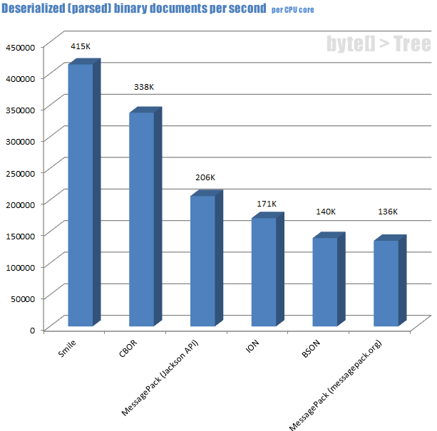
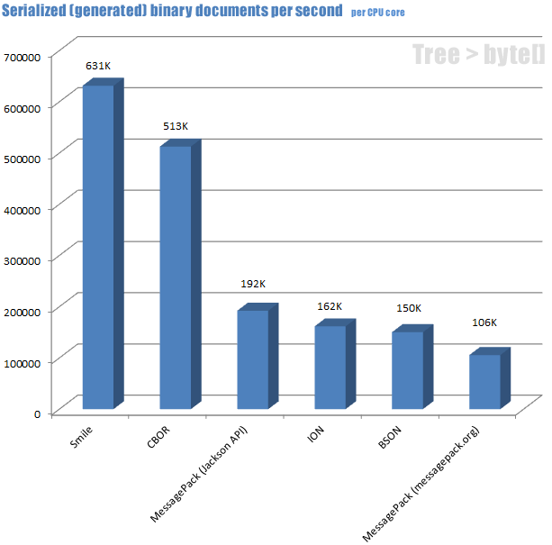

# Performance comparison of Binary Readers
The higher values are better:

Test machine: Intel Core i5-4590 CPU @ 3.3GHz, 16GB RAM, Sample JSON
# Performance comparison of Binary Writers
The higher values are better:

Test machine: Intel Core i5-4590 CPU @ 3.3GHz, 16GB RAM, Sample JSON
← Kryo Introduction →